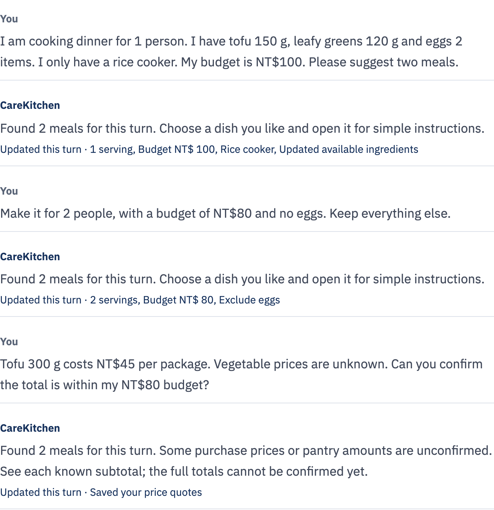

04 · THE LIVE ASSISTANT

TURN 1
“Dinner for one, tofu 150 g, greens 120 g, 2 eggs, NT$100, rice cooker only. Give me two simple meals.” Result: 2 meals.
TURN 2
“Make it two people, NT$80, no eggs, the rest as before.” The reply lists what changed: 2 servings, NT$80, egg excluded. Both new cards show “exclusion applied: egg”.
TURN 3
“Tofu, 300 g pack, NT$45. The greens price isn’t known yet. Can you be sure it stays under NT$80?” The price is recorded; the total stays unconfirmed.
Live GPT-6 Luna session, 2026-11-23. The English on-screen replies come from a synthetic browser run.
CareKitchen · WAICY 2026 · Track 4: LLM & AI Agent